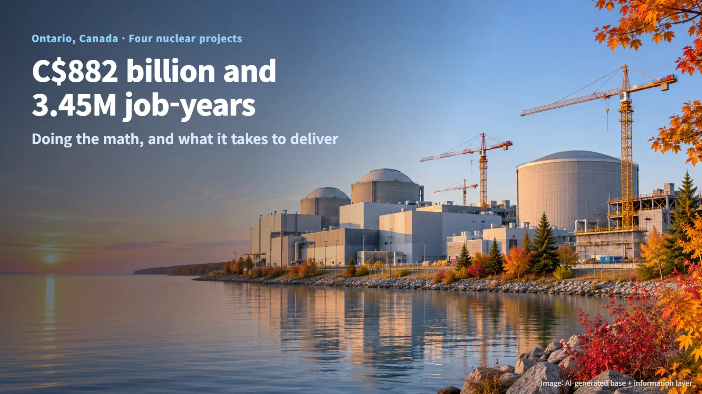
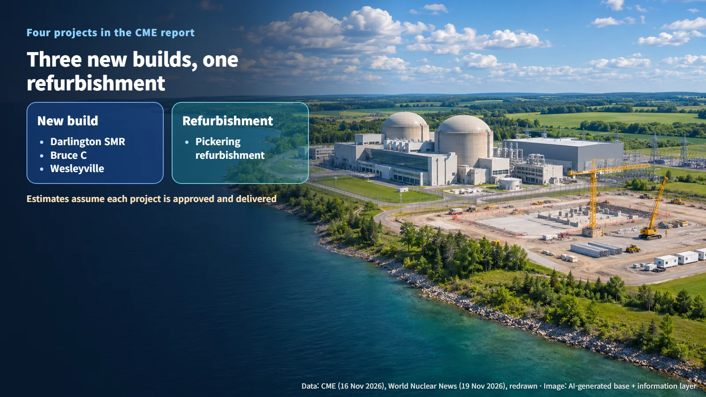
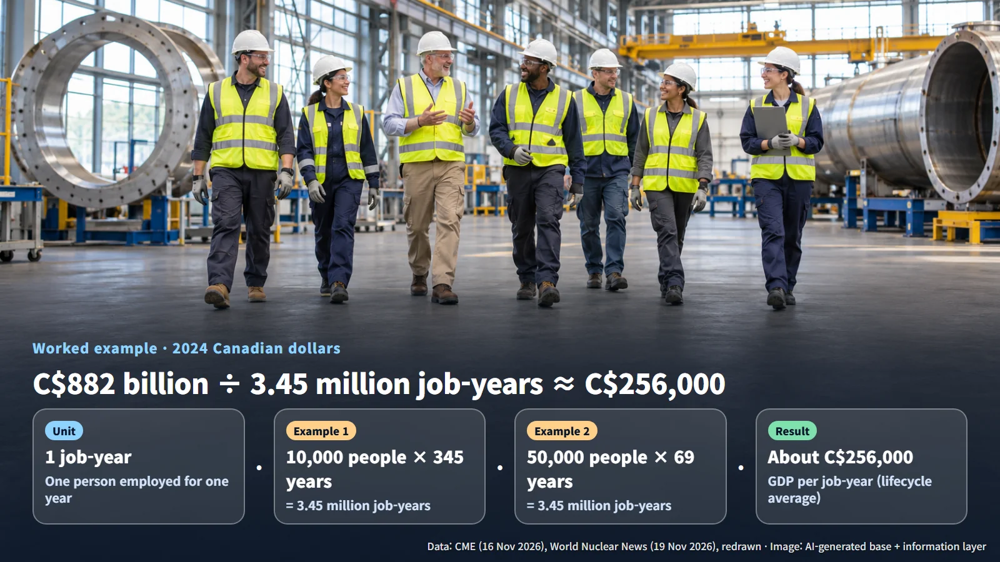

Canada · Ontario · Supply chain
Reading C$882 Billion and 3.45 Million Job-Years: The Industrial Case for Ontario's Four Nuclear Projects
Canadian Manufacturers & Exporters estimates C$882 billion in GDP and 3.45 million job-years over the lifecycle of four Ontario nuclear projects. Here is how to read those numbers.
Nuclear project announcements tend to arrive with very large numbers attached: hundreds of billions in economic benefit, millions of years of employment. The scale is striking, and it naturally raises a question: what exactly was counted? A new report from Ontario carries exactly these kinds of figures, and unpacking them one by one gives a much clearer view of how nuclear projects connect to a regional industrial base.
On November 19, 2026, World Nuclear News reported on an industrial-impact study by Canadian Manufacturers & Exporters (CME) covering nuclear projects in Ontario. CME's own announcement is dated November 16. The study brings together economic impact assessments for four Ontario nuclear projects and estimates their combined lifetime contribution to Canada's GDP at about C$882 billion, with cumulative employment of 3.45 million job-years.

The Four Projects: Three New Builds and One Refurbishment
The four projects in the report are the Darlington SMR, the Pickering refurbishment, Bruce C and Wesleyville. They fall naturally into two groups.
- New build (three projects): Darlington SMR, Bruce C and Wesleyville. These involve constructing new reactors. The Darlington SMR is a small modular reactor project, a smaller reactor design whose major components are built in a factory and assembled on site.
- Refurbishment of an existing plant (one project): the Pickering refurbishment, which replaces and upgrades major equipment at an operating station so it can keep running longer.
The two groups draw on industry in different ways. A new build procures everything from site preparation to reactor, turbine and electrical equipment. A refurbishment replaces aging components in a defined sequence and then requalifies the plant. Because the report includes both, it describes a supply chain in Ontario that would be building new plants and renewing existing ones at the same time.

This blog has looked at each path separately before: the new-build side in an earlier post reassessing the schedule and cost targets of Canada's first SMR, the Darlington BWRX-300, and the refurbishment side in an earlier post on the start of major component replacement at Bruce Unit 5. What the CME report adds is a single, industry-wide picture that combines individual projects.
The current stage matters too. CME notes that the benefits of potential new projects depend on their approval and actual execution. The C$882 billion and 3.45 million job-year figures describe a scenario in which all four projects are approved and carried out as planned; each project still has its approval, design and procurement stages ahead of it.
Doing the Math on C$882 Billion and 3.45 Million Job-Years
Start with the unit. One job-year is the work of one person employed for one year. It measures a total quantity of work, people multiplied by time, so the same 3.45 million job-years can be pictured in several ways:
- for example, 10,000 people working for 345 years, or
- 50,000 people working for 69 years.
Nuclear projects have very long life cycles, running from planning and construction through decades of operation and later refurbishment. The 3.45 million figure is the total work accumulated across that whole span; the number of people employed at any given moment rises and falls with each project's schedule.
Next, divide one figure by the other to get a rough sense of how much GDP each job-year represents:
> C$882 billion ÷ 3.45 million job-years ≈ about C$256,000 per job-year
The result is about C$256,000 per job-year. This is a simple ratio between two aggregate lifetime estimates, not an individual worker’s wage or productivity. Construction, operation and refurbishment differ in timing, employment and value-added composition, so the calculation is only an aid to understanding the job-year unit.

Two reference points help keep the figures in context. The GDP estimate is expressed in 2024 Canadian dollars, a constant-price basis that lets effects spread over decades be compared at a single point in time. And GDP contribution measures value added across the whole economy, while orders for individual companies are set item by item as each project issues its procurement packages.
Which Manufacturers Could Take Part
The report identifies several areas where supply chain participation could grow through both new builds and refurbishment:
- precision components
- transformers
- electrical equipment
- robotics
- control systems
The list shows how wide a nuclear supply chain reaches. Beyond the reactor itself, a plant needs transformers and electrical equipment to connect to the grid and control systems to monitor and operate the station. Robotics handles inspection and replacement work in areas that are difficult for people to enter, which fits refurbishment work especially well. One nuclear plant, in other words, spreads into work across many manufacturing sectors.
CME argues that three things need to line up with long nuclear project schedules for these benefits to materialize:
1. Modernizing existing manufacturing facilities so they can meet nuclear-grade precision and quality. 2. Certification needed to supply nuclear components. 3. Developing a specialized workforce for design, fabrication, construction and inspection.
Nuclear components carry stricter quality requirements than general industrial equipment, so upgrading a plant and earning certification takes time. That gives industrial benefits a particular structure: companies can invest and prepare in advance once project schedules are visible. The report's central message is that timing of preparation matters as much as the size of the headline numbers.
CME's Four Requests: Timely Decisions, Procurement Visibility, Skills and Export Finance
Building on this analysis, CME made four recommendations:
1. Timely decisions on major projects. Approvals and investment decisions set the schedule for the entire supply chain. 2. Visibility of long-term procurement plans. Knowing which items will be ordered, when and in what volume lets manufacturers start facility investment and certification work. 3. Training and apprenticeships tied to project schedules. Skills development takes years, so programs designed around project timelines put trained workers in place when they are needed. 4. Trade and export finance support. Financing helps carry capabilities built on domestic projects into markets abroad.
The four requests pair neatly with the conditions in the previous section. Timely decisions and procurement visibility are the starting signals for investment in modernization and certification; training and apprenticeships answer the workforce condition; and export finance extends the life of capabilities developed at home. CME's recommendations, in effect, attach a sequence for turning the benefits into reality to the claim that the benefits are large.
The next things to watch are how approval, design and procurement progress on each of the four projects, and how actual procurement plans and training schedules line up with the report's recommendations. The C$882 billion and 3.45 million job-years become specific factory orders and jobs as each of those steps moves forward. When a large number appears in a project announcement, it pays to look at its unit, its price basis and the stages that remain between today and that number.